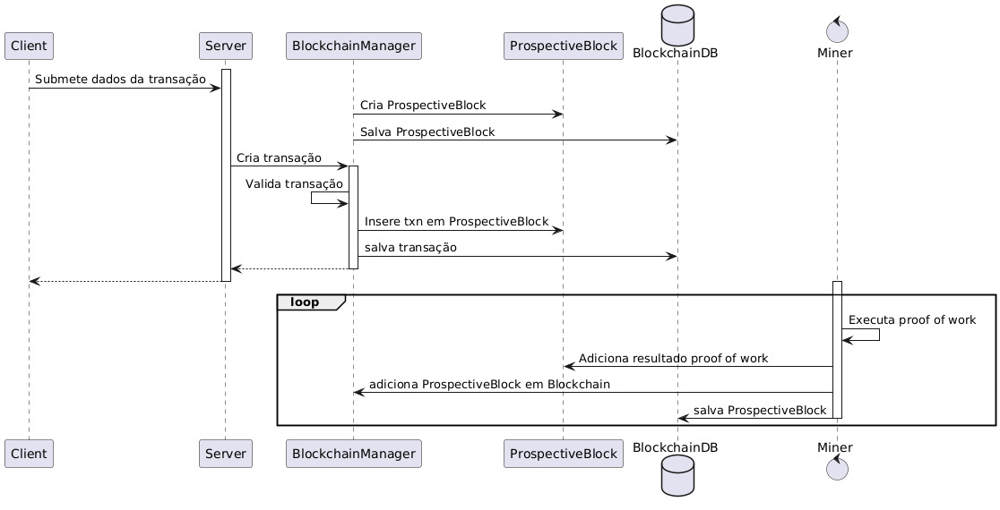

Sobre a blockchain
Criptomoeda
Para que seja o conceito da blockchain, introduziremos, primeiramente, o conceito de uma criptomoeda.
Uma criptomoeda é uma forma de dinheiro digital que, utilizando criptografia, garante a segurança de transações e o controle da emissão de moedas. Diferentemente das moedas tradicionais, as criptomoedas operam em um sistema descentralizado, o que permite a eliminação de intermediários financeiros. Cada transação é realizada em um bloco da blockchain e essas moedas podem ser utilizadas para cumprir uma variedade de propósitos, como compras de produtos online, investimentos, compras de ativos e transferência de valor monetário entre indivíduos.
Blockchain
A blockchain é um registro público de todas as transações realizadas em uma rede específica, estruturadas em blocos encadeados que garantem transparência e segurança. Cada um dos blocos contém um conjunto de transações, sendo ligados - de maneira criptografada - ao bloco anterior, formando uma cadeia contínua. Com isso, qualquer tentativa de modificar informações anteriores se torna um processo extremamente complicado, visto que, para isso, é necessária a alteração de todos os blocos que vem em sequência.
Entendendo uma Blockchain:
-
Criptografia De Chave Pública: Técnica que utiliza um par de chaves criptográficas - uma pública e uma privada.
- Chave pública: utilizada para criptografar dados, tornando-os acessíveis apenas para quem possui a chave privada correspondente.
- Chave privada: utilizada para decifrar os dados criptografado, garantindo que apenas o destinatário legítimo possa ler as mensagens.
-
Algoritmo De Consenso: utilizado em uma blockchain para garantir que todos os participantes da rede concordem sobre o estado atual do sistema de maneira descentralizada. Diferentes algoritmos de consenso desempenham papéis variados na validação das transações:
- Proof of Work (PoW): em que os participantes resolvem problemas computacionais complexos para validar transações.
- Proof of Stake (PoS): onde a validade das transações é determinada pela quantidade de moeda mantida pelos participantes.
Funcionamento da blockchain implementada no projeto
Por meio do BlockchainManager, o servidor utiliza de duas threads principais:
- A thread mineradora, que a partir de um hash inicial chamado proof executa o algoritmo de proof of work para minerar o próximo bloco.
- A segunda thread, que, em paralelo à primeira, recebe transações da criptomoeda em um bloco auxiliar.
Quando o processo e mineração termina, as transições são efetivadas no bloco e o processo recomeça. Nesse período de tempo, o cliente pode pedir informações das transações feita pela carteira (wallet) para saber a quantidade de dinheiro disponível. Assim, pode fazer novas transações.
